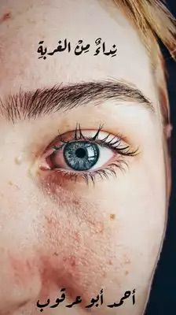
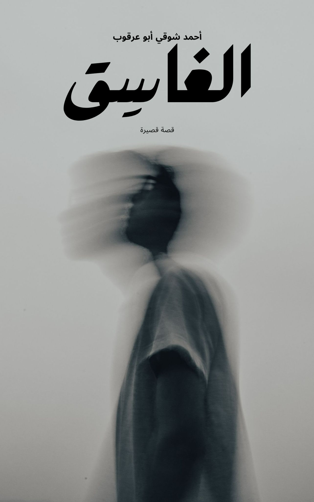
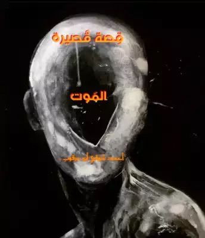
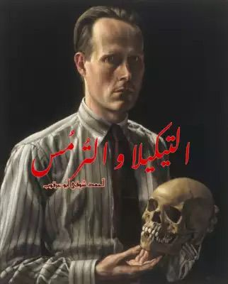
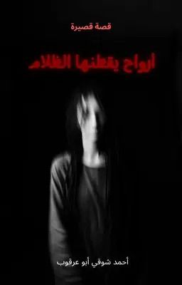

نداء من الغربة
رواية اجتماعية بطابع إنساني وفلسفي، تتناول الأرض والذاكرة والهوية بأسلوب سردي طويل.
تحميل PDFجميع أعمال الكاتب المتوفرة على الموقع مع روابط قراءة أو تحميل.

رواية اجتماعية بطابع إنساني وفلسفي، تتناول الأرض والذاكرة والهوية بأسلوب سردي طويل.
تحميل PDF
قصة قصيرة تحمل طابعاً نفسياً وفلسفياً، وتفتح مساحة للتأمل في الإنسان والواقع.
تحميل PDF
قصة قصيرة تتناول أفكاراً وجودية ومعتقدات تقود الشخصية إلى مواجهة قاسية مع الذات.
تحميل PDF
قصة قصيرة تجمع بين الرمزية والسرد الاجتماعي والسياسي في قالب أدبي خاص.
تحميل PDF
قصة قصيرة تروي حكاية فتاة يُجهض حلمها بالتعليم وتُساق نحو زواج مفروض عليها، فتتأمل الحرية والفقد والموت في نص شاعري يحمل مفاجأة مؤثرة في ختامه.
تحميل PDF